Start 2012, 100 yr, NoERT, Spontaneous, Historical Catalog Results
| Start 2012, 100 yr, NoERT, Spontaneous, Historical Catalog |
|---|
| Num Simulations | 555 (incomplete) |
| Start Time | 2012/01/01 00:00:00 UTC |
| Start Time Epoch Milliseconds | 1325376000000 |
| Duration | 100 Years |
| Includes Spontaneous? | true |
| Trigger Ruptures | (none) |
| Historical Ruptures | 60366 Trigger Ruptures |
| First: M7.3 at 1852/01/05 04:40:39 UTC |
| Last: M3.2 at 2011/12/31 19:14:44 UTC |
| Largest: M7.9 at 1857/01/09 16:25:39 UTC |
| Config Generated With | u3etas_config_builder.sh --start-year 2012 --num-simulations 1000 --duration-years 100 --prob-model NO_ERT --include-spontaneous --historical-catalog --scale-factor 1.0 --hpc-site USC_HPC --nodes 36 --hours 24 --queue scec |
Table Of Contents
Magnitude Frequency Distribution
(top)
Legend
- Mean (thick black line): mean annual rate across all 555 catalogs
- 2.5%,97.5% (thin black lines): annual rate percentiles across all 555 catalogs
- Median (thin blue line): median annual rate across all 555 catalogs
- Mode (thin cyan line): modal annual rate across all 555 catalogs (scaled to annualized value)
- 100 yr Probability (thin red line): 100 year probability calculated as the fraction of catalogs with at least 1 occurrence
- 100 yr Supraseismogenic Probability (thin dashed red line): same as above, but only for supraseismogenic ruptures on explicitly modeled UCERF3 faults
- 95% Conf (light red shaded region): binomial 95% confidence bounds on probability
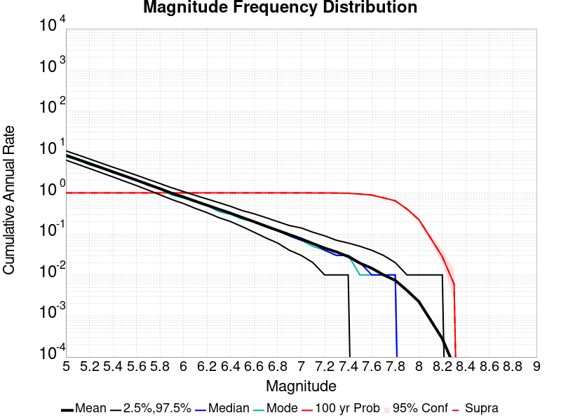
| Mag | Mean | 2.5 %ile | 97.5 %ile | Median | Mode | 100 yr Probability | 100 yr Supra-Seis Prob |
|---|
| M≥5 | 8.217 | 6.310 | 10.550 | 8.120 | 7.530 | 1.000 (100.00%) | 1.000 (100.00%) |
| M≥5.1 | 6.519 | 5.000 | 8.460 | 6.450 | 6.430 | 1.000 (100.00%) | 1.000 (100.00%) |
| M≥5.2 | 5.167 | 3.990 | 6.660 | 5.100 | 4.900 | 1.000 (100.00%) | 1.000 (100.00%) |
| M≥5.3 | 4.091 | 3.160 | 5.320 | 4.040 | 4.430 | 1.000 (100.00%) | 1.000 (100.00%) |
| M≥5.4 | 3.242 | 2.470 | 4.240 | 3.200 | 2.940 | 1.000 (100.00%) | 1.000 (100.00%) |
| M≥5.5 | 2.563 | 1.950 | 3.380 | 2.530 | 2.400 | 1.000 (100.00%) | 1.000 (100.00%) |
| M≥5.6 | 2.025 | 1.510 | 2.700 | 2.000 | 1.970 | 1.000 (100.00%) | 1.000 (100.00%) |
| M≥5.7 | 1.596 | 1.180 | 2.150 | 1.580 | 1.600 | 1.000 (100.00%) | 1.000 (100.00%) |
| M≥5.8 | 1.254 | 0.900 | 1.720 | 1.250 | 1.270 | 1.000 (100.00%) | 1.000 (100.00%) |
| M≥5.9 | 0.975 | 0.700 | 1.340 | 0.960 | 0.890 | 1.000 (100.00%) | 1.000 (100.00%) |
| M≥6 | 0.787 | 0.550 | 1.090 | 0.780 | 0.850 | 1.000 (100.00%) | 1.000 (100.00%) |
| M≥6.1 | 0.620 | 0.410 | 0.880 | 0.620 | 0.520 | 1.000 (100.00%) | 1.000 (100.00%) |
| M≥6.2 | 0.497 | 0.320 | 0.720 | 0.490 | 0.400 | 1.000 (100.00%) | 1.000 (100.00%) |
| M≥6.3 | 0.395 | 0.250 | 0.590 | 0.390 | 0.350 | 1.000 (100.00%) | 1.000 (100.00%) |
| M≥6.4 | 0.316 | 0.200 | 0.480 | 0.310 | 0.290 | 1.000 (100.00%) | 1.000 (100.00%) |
| M≥6.5 | 0.247 | 0.140 | 0.380 | 0.240 | 0.250 | 1.000 (100.00%) | 1.000 (100.00%) |
| M≥6.6 | 0.195 | 0.110 | 0.310 | 0.190 | 0.200 | 1.000 (100.00%) | 1.000 (100.00%) |
| M≥6.7 | 0.152 | 0.080 | 0.250 | 0.150 | 0.160 | 1.000 (100.00%) | 1.000 (100.00%) |
| M≥6.8 | 0.120 | 0.060 | 0.200 | 0.120 | 0.100 | 1.000 (100.00%) | 1.000 (100.00%) |
| M≥6.9 | 0.094 | 0.040 | 0.160 | 0.090 | 0.090 | 1.000 (100.00%) | 1.000 (100.00%) |
| M≥7 | 0.074 | 0.030 | 0.130 | 0.070 | 0.060 | 1.000 (100.00%) | 1.000 (100.00%) |
| M≥7.1 | 0.057 | 0.020 | 0.110 | 0.050 | 0.040 | 1.000 (100.00%) | 1.000 (100.00%) |
| M≥7.2 | 0.044 | 0.010 | 0.090 | 0.040 | 0.040 | 0.996 (99.64%) | 0.996 (99.64%) |
| M≥7.3 | 0.036 | 0.010 | 0.070 | 0.030 | 0.030 | 0.993 (99.28%) | 0.993 (99.28%) |
| M≥7.4 | 0.028 | 0.010 | 0.060 | 0.030 | 0.020 | 0.982 (98.20%) | 0.982 (98.20%) |
| M≥7.5 | 0.019 | 0.000 | 0.050 | 0.020 | 0.010 | 0.935 (93.51%) | 0.935 (93.51%) |
| M≥7.6 | 0.014 | 0.000 | 0.040 | 0.010 | 0.010 | 0.879 (87.93%) | 0.879 (87.93%) |
| M≥7.7 | 9.66E-3 | 0.000 | 0.030 | 0.010 | 0.010 | 0.739 (73.87%) | 0.739 (73.87%) |
| M≥7.8 | 7.10E-3 | 0.000 | 0.020 | 0.010 | 0.010 | 0.622 (62.16%) | 0.622 (62.16%) |
| M≥7.9 | 4.14E-3 | 0.000 | 0.010 | 0.000 | 0.000 | 0.400 (40.00%) | 0.400 (40.00%) |
| M≥8 | 2.29E-3 | 0.000 | 0.010 | 0.000 | 0.000 | 0.227 (22.70%) | 0.227 (22.70%) |
| M≥8.1 | 9.01E-4 | 0.000 | 0.010 | 0.000 | 0.000 | 0.090 (9.01%) | 0.090 (9.01%) |
| M≥8.2 | 3.06E-4 | 0.000 | 0.010 | 0.000 | 0.000 | 0.031 (3.06%) | 0.031 (3.06%) |
| M≥8.3 | 9.01E-5 | 0.000 | 0.000 | 0.000 | 0.000 | 9.01E-3 (0.90%) | 9.01E-3 (0.90%) |
| M≥8.4 | 0.000 | 0.000 | 0.000 | 0.000 | 0.000 | 0.000 (0.00%) | 0.000 (0.00%) |
| M≥8.5 | 0.000 | 0.000 | 0.000 | 0.000 | 0.000 | 0.000 (0.00%) | 0.000 (0.00%) |
| M≥8.6 | 0.000 | 0.000 | 0.000 | 0.000 | 0.000 | 0.000 (0.00%) | 0.000 (0.00%) |
| M≥8.7 | 0.000 | 0.000 | 0.000 | 0.000 | 0.000 | 0.000 (0.00%) | 0.000 (0.00%) |
| M≥8.8 | 0.000 | 0.000 | 0.000 | 0.000 | 0.000 | 0.000 (0.00%) | 0.000 (0.00%) |
| M≥8.9 | 0.000 | 0.000 | 0.000 | 0.000 | 0.000 | 0.000 (0.00%) | 0.000 (0.00%) |
| M≥9 | 0.000 | 0.000 | 0.000 | 0.000 | 0.000 | 0.000 (0.00%) | 0.000 (0.00%) |
Long Term Rate Variability
(top)
80 Year Variability
(top)

Download CSV Here
| Magnitude | Mean | Median | Mode | Std. Dev. | 2.5 %-ile | 16 %-ile | 84 %-ile | 97.5 %-ile |
|---|
| 5.0 | 8.28214 | 8.2125 | 8.6875 | 1.226614 | 6.2625 | 7.0125 | 9.4625 | 11.075 |
| 5.1 | 6.5683784 | 6.5 | 6.4 | 0.98930514 | 4.8875 | 5.5375 | 7.5375 | 8.7125 |
| 5.2 | 5.2059684 | 5.1375 | 5.225 | 0.795945 | 3.8375 | 4.375 | 5.9625 | 7.0375 |
| 5.3 | 4.1240993 | 4.0875 | 4.2375 | 0.63324106 | 3.0625 | 3.4625 | 4.7375 | 5.6 |
| 5.4 | 3.269099 | 3.25 | 3.25 | 0.51927215 | 2.45 | 2.725 | 3.7875 | 4.5 |
| 5.5 | 2.584009 | 2.55 | 2.5375 | 0.42560935 | 1.9 | 2.1375 | 3.0125 | 3.575 |
| 5.6 | 2.0422974 | 2.0125 | 2.125 | 0.35511717 | 1.475 | 1.6875 | 2.4 | 2.85 |
| 5.7 | 1.608401 | 1.5875 | 1.5375 | 0.2888586 | 1.125 | 1.3125 | 1.8875 | 2.25 |
| 5.8 | 1.2659459 | 1.25 | 1.25 | 0.23492141 | 0.875 | 1.025 | 1.5 | 1.8375 |
| 5.9 | 0.98533785 | 0.9625 | 1.0125 | 0.19497682 | 0.6625 | 0.7875 | 1.1875 | 1.4625 |
| 6.0 | 0.79513514 | 0.775 | 0.7625 | 0.16513069 | 0.525 | 0.625 | 0.95 | 1.15 |
| 6.1 | 0.6273874 | 0.6125 | 0.55 | 0.14035612 | 0.3875 | 0.4875 | 0.7625 | 0.925 |
| 6.2 | 0.50396395 | 0.5 | 0.5 | 0.11761366 | 0.3125 | 0.375 | 0.625 | 0.75 |
| 6.3 | 0.40166667 | 0.3875 | 0.375 | 0.09829912 | 0.2375 | 0.3 | 0.5 | 0.625 |
| 6.4 | 0.32063064 | 0.3125 | 0.325 | 0.083255395 | 0.175 | 0.2375 | 0.4 | 0.5 |
| 6.5 | 0.2506982 | 0.25 | 0.2375 | 0.06984234 | 0.125 | 0.1875 | 0.3125 | 0.4125 |
| 6.6 | 0.19871622 | 0.1875 | 0.2 | 0.06047054 | 0.1 | 0.1375 | 0.25 | 0.3375 |
| 6.7 | 0.15506756 | 0.15 | 0.125 | 0.05149443 | 0.075 | 0.1 | 0.2 | 0.275 |
| 6.8 | 0.12297297 | 0.1125 | 0.1125 | 0.04243746 | 0.05 | 0.0875 | 0.1625 | 0.225 |
| 6.9 | 0.09644144 | 0.0875 | 0.0875 | 0.035936963 | 0.025 | 0.0625 | 0.1375 | 0.175 |
| 7.0 | 0.07563063 | 0.075 | 0.0625 | 0.031349514 | 0.025 | 0.05 | 0.1 | 0.15 |
| 7.1 | 0.058063064 | 0.05 | 0.05 | 0.026120393 | 0.0125 | 0.0375 | 0.0875 | 0.125 |
| 7.2 | 0.045337837 | 0.0375 | 0.0375 | 0.022087798 | 0.0125 | 0.025 | 0.0625 | 0.1 |
| 7.3 | 0.03668919 | 0.0375 | 0.0375 | 0.018728664 | 0.0 | 0.0125 | 0.05 | 0.075 |
| 7.4 | 0.028603604 | 0.025 | 0.025 | 0.016641136 | 0.0 | 0.0125 | 0.05 | 0.0625 |
| 7.5 | 0.01972973 | 0.0125 | 0.0125 | 0.013280469 | 0.0 | 0.0125 | 0.0375 | 0.05 |
| 7.6 | 0.014887387 | 0.0125 | 0.0125 | 0.010591633 | 0.0 | 0.0 | 0.025 | 0.0375 |
| 7.7 | 0.010135135 | 0.0125 | 0.0125 | 0.008680019 | 0.0 | 0.0 | 0.0125 | 0.025 |
| 7.8 | 0.0074099097 | 0.0125 | 0.0125 | 0.0072811632 | 0.0 | 0.0 | 0.0125 | 0.025 |
| 7.9 | 0.004301802 | 0.0 | 0.0 | 0.006038116 | 0.0 | 0.0 | 0.0125 | 0.0125 |
| 8.0 | 0.0022972974 | 0.0 | 0.0 | 0.004903573 | 0.0 | 0.0 | 0.0125 | 0.0125 |
| 8.1 | 9.4594597E-4 | 0.0 | 0.0 | 0.0033089635 | 0.0 | 0.0 | 0.0 | 0.0125 |
| 8.2 | 2.927928E-4 | 0.0 | 0.0 | 0.0018922563 | 0.0 | 0.0 | 0.0 | 0.0 |
| 8.3 | 1.12612615E-4 | 0.0 | 0.0 | 0.0011821565 | 0.0 | 0.0 | 0.0 | 0.0 |
| 8.4 | 0.0 | 0.0 | 0.0 | 0.0 | 0.0 | 0.0 | 0.0 | 0.0 |
| 8.5 | 0.0 | 0.0 | 0.0 | 0.0 | 0.0 | 0.0 | 0.0 | 0.0 |
| 8.6 | 0.0 | 0.0 | 0.0 | 0.0 | 0.0 | 0.0 | 0.0 | 0.0 |
| 8.7 | 0.0 | 0.0 | 0.0 | 0.0 | 0.0 | 0.0 | 0.0 | 0.0 |
| 8.8 | 0.0 | 0.0 | 0.0 | 0.0 | 0.0 | 0.0 | 0.0 | 0.0 |
| 8.9 | 0.0 | 0.0 | 0.0 | 0.0 | 0.0 | 0.0 | 0.0 | 0.0 |
| 9.0 | 0.0 | 0.0 | 0.0 | 0.0 | 0.0 | 0.0 | 0.0 | 0.0 |
28 Year Variability
(top)
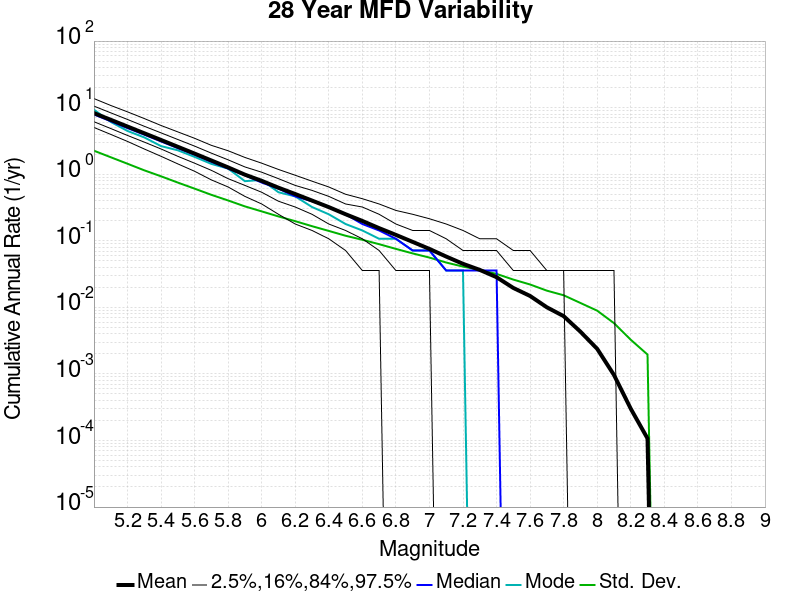
Download CSV Here
| Magnitude | Mean | Median | Mode | Std. Dev. | 2.5 %-ile | 16 %-ile | 84 %-ile | 97.5 %-ile |
|---|
| 5.0 | 8.276962 | 7.892857 | 9.321428 | 2.2541916 | 5.035714 | 6.142857 | 10.535714 | 13.678572 |
| 5.1 | 6.565959 | 6.25 | 6.107143 | 1.7986482 | 3.9642856 | 4.857143 | 8.357142 | 10.785714 |
| 5.2 | 5.2031746 | 4.928571 | 4.464286 | 1.4361383 | 3.107143 | 3.8214285 | 6.642857 | 8.642858 |
| 5.3 | 4.120914 | 3.9285715 | 3.5714285 | 1.1438482 | 2.392857 | 3.0357144 | 5.25 | 6.857143 |
| 5.4 | 3.2671814 | 3.107143 | 2.642857 | 0.92977905 | 1.8571428 | 2.392857 | 4.178571 | 5.392857 |
| 5.5 | 2.582175 | 2.4642856 | 2.2857144 | 0.74859965 | 1.4285715 | 1.8571428 | 3.3214285 | 4.321429 |
| 5.6 | 2.0406692 | 1.9642857 | 1.8214285 | 0.6070134 | 1.1071428 | 1.4642857 | 2.642857 | 3.4642856 |
| 5.7 | 1.6075504 | 1.5357143 | 1.4285715 | 0.49003762 | 0.8214286 | 1.1428572 | 2.0714285 | 2.7142856 |
| 5.8 | 1.2649721 | 1.2142857 | 1.2142857 | 0.40300047 | 0.64285713 | 0.85714287 | 1.6428572 | 2.25 |
| 5.9 | 0.9842771 | 0.96428573 | 0.78571427 | 0.328524 | 0.4642857 | 0.6785714 | 1.2857143 | 1.7857143 |
| 6.0 | 0.79474473 | 0.75 | 0.8214286 | 0.27633747 | 0.35714287 | 0.53571427 | 1.0714285 | 1.4642857 |
| 6.1 | 0.6269841 | 0.60714287 | 0.53571427 | 0.23208195 | 0.25 | 0.39285713 | 0.85714287 | 1.1785715 |
| 6.2 | 0.5037538 | 0.4642857 | 0.4642857 | 0.19705313 | 0.17857143 | 0.32142857 | 0.6785714 | 0.96428573 |
| 6.3 | 0.4017589 | 0.39285713 | 0.32142857 | 0.16564097 | 0.14285715 | 0.25 | 0.5714286 | 0.78571427 |
| 6.4 | 0.3203346 | 0.32142857 | 0.25 | 0.14067115 | 0.10714286 | 0.17857143 | 0.4642857 | 0.64285713 |
| 6.5 | 0.25045046 | 0.25 | 0.17857143 | 0.119002044 | 0.071428575 | 0.14285715 | 0.35714287 | 0.5 |
| 6.6 | 0.19856285 | 0.17857143 | 0.14285715 | 0.10351984 | 0.035714287 | 0.10714286 | 0.32142857 | 0.42857143 |
| 6.7 | 0.15476191 | 0.14285715 | 0.10714286 | 0.08889854 | 0.035714287 | 0.071428575 | 0.25 | 0.35714287 |
| 6.8 | 0.12265122 | 0.10714286 | 0.10714286 | 0.07554384 | 0.0 | 0.035714287 | 0.17857143 | 0.2857143 |
| 6.9 | 0.0962248 | 0.071428575 | 0.071428575 | 0.0645952 | 0.0 | 0.035714287 | 0.14285715 | 0.25 |
| 7.0 | 0.07543973 | 0.071428575 | 0.071428575 | 0.05590991 | 0.0 | 0.035714287 | 0.14285715 | 0.21428572 |
| 7.1 | 0.057915058 | 0.035714287 | 0.035714287 | 0.047112506 | 0.0 | 0.0 | 0.10714286 | 0.17857143 |
| 7.2 | 0.045066494 | 0.035714287 | 0.035714287 | 0.0409517 | 0.0 | 0.0 | 0.071428575 | 0.14285715 |
| 7.3 | 0.03652939 | 0.035714287 | 0.0 | 0.036511667 | 0.0 | 0.0 | 0.071428575 | 0.10714286 |
| 7.4 | 0.028378379 | 0.035714287 | 0.0 | 0.03180617 | 0.0 | 0.0 | 0.071428575 | 0.10714286 |
| 7.5 | 0.01956242 | 0.0 | 0.0 | 0.026125887 | 0.0 | 0.0 | 0.035714287 | 0.071428575 |
| 7.6 | 0.014821965 | 0.0 | 0.0 | 0.022048896 | 0.0 | 0.0 | 0.035714287 | 0.071428575 |
| 7.7 | 0.01001716 | 0.0 | 0.0 | 0.017814502 | 0.0 | 0.0 | 0.035714287 | 0.035714287 |
| 7.8 | 0.0073788073 | 0.0 | 0.0 | 0.015187844 | 0.0 | 0.0 | 0.035714287 | 0.035714287 |
| 7.9 | 0.0043114545 | 0.0 | 0.0 | 0.011639297 | 0.0 | 0.0 | 0.0 | 0.035714287 |
| 8.0 | 0.0023809525 | 0.0 | 0.0 | 0.008911384 | 0.0 | 0.0 | 0.0 | 0.035714287 |
| 8.1 | 9.6525095E-4 | 0.0 | 0.0 | 0.005793246 | 0.0 | 0.0 | 0.0 | 0.035714287 |
| 8.2 | 3.003003E-4 | 0.0 | 0.0 | 0.0032620886 | 0.0 | 0.0 | 0.0 | 0.0 |
| 8.3 | 1.0725011E-4 | 0.0 | 0.0 | 0.0019547772 | 0.0 | 0.0 | 0.0 | 0.0 |
| 8.4 | 0.0 | 0.0 | 0.0 | 0.0 | 0.0 | 0.0 | 0.0 | 0.0 |
| 8.5 | 0.0 | 0.0 | 0.0 | 0.0 | 0.0 | 0.0 | 0.0 | 0.0 |
| 8.6 | 0.0 | 0.0 | 0.0 | 0.0 | 0.0 | 0.0 | 0.0 | 0.0 |
| 8.7 | 0.0 | 0.0 | 0.0 | 0.0 | 0.0 | 0.0 | 0.0 | 0.0 |
| 8.8 | 0.0 | 0.0 | 0.0 | 0.0 | 0.0 | 0.0 | 0.0 | 0.0 |
| 8.9 | 0.0 | 0.0 | 0.0 | 0.0 | 0.0 | 0.0 | 0.0 | 0.0 |
| 9.0 | 0.0 | 0.0 | 0.0 | 0.0 | 0.0 | 0.0 | 0.0 | 0.0 |
Variability Duration Dependence
(top)
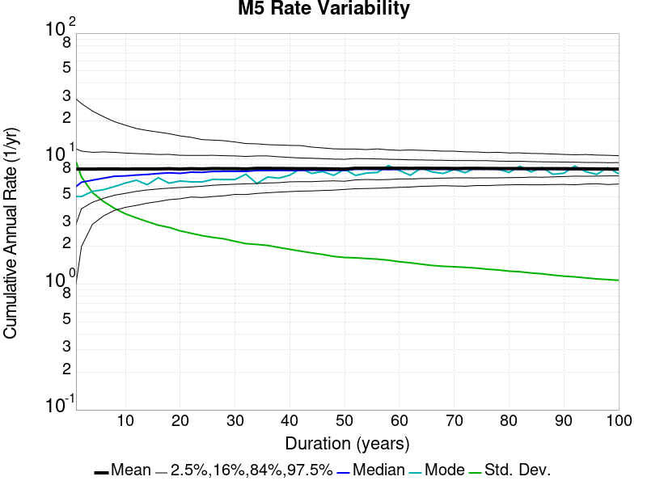
Download CSV Here
| Duration (years) | Mean | Median | Mode | Std. Dev. | 2.5 %-ile | 16 %-ile | 84 %-ile | 97.5 %-ile |
|---|
| 1.0 | 8.216919 | 6.0 | 5.0 | 9.429154 | 1.0 | 3.0 | 12.0 | 30.0 |
| 2.0 | 8.216919 | 6.5 | 5.5 | 7.0713787 | 2.0 | 4.0 | 11.5 | 27.5 |
| 4.0 | 8.216919 | 6.75 | 5.5 | 5.301122 | 3.0 | 4.5 | 11.25 | 23.75 |
| 6.0 | 8.247278 | 7.0 | 6.5 | 4.5251245 | 3.5 | 4.8333335 | 11.166667 | 21.333334 |
| 8.0 | 8.247278 | 7.125 | 7.125 | 3.9856768 | 3.875 | 5.125 | 11.125 | 19.625 |
| 10.0 | 8.216919 | 7.3 | 6.4 | 3.5940235 | 4.1 | 5.3 | 11.0 | 18.4 |
| 12.0 | 8.247278 | 7.3333335 | 6.75 | 3.341469 | 4.25 | 5.5 | 10.916667 | 17.416666 |
| 14.0 | 8.232579 | 7.428571 | 6.214286 | 3.1168575 | 4.357143 | 5.571429 | 10.857142 | 16.714285 |
| 16.0 | 8.247278 | 7.5 | 7.0625 | 2.9183354 | 4.5 | 5.75 | 10.75 | 16.25 |
| 18.0 | 8.277898 | 7.611111 | 6.388889 | 2.796991 | 4.6666665 | 5.8333335 | 10.777778 | 15.944445 |
| 20.0 | 8.216919 | 7.6 | 6.65 | 2.6120574 | 4.8 | 5.9 | 10.55 | 15.15 |
| 22.0 | 8.27631 | 7.7272725 | 6.7727275 | 2.5358088 | 4.9545455 | 5.909091 | 10.5 | 14.772727 |
| 24.0 | 8.247278 | 7.75 | 6.5416665 | 2.4352846 | 4.9166665 | 5.9583335 | 10.625 | 14.125 |
| 26.0 | 8.291915 | 7.8846154 | 7.6153846 | 2.3185413 | 5.0 | 6.076923 | 10.538462 | 13.769231 |
| 28.0 | 8.276962 | 7.892857 | 9.321428 | 2.2541916 | 5.035714 | 6.142857 | 10.535714 | 13.678572 |
| 30.0 | 8.277898 | 7.9 | 8.266666 | 2.1461337 | 5.2 | 6.2 | 10.466666 | 13.333333 |
| 32.0 | 8.247278 | 7.90625 | 6.9375 | 2.0765162 | 5.1875 | 6.28125 | 10.40625 | 13.15625 |
| 34.0 | 8.321939 | 8.0 | 6.352941 | 2.013251 | 5.352941 | 6.3235292 | 10.441176 | 13.058824 |
| 36.0 | 8.309109 | 7.9444447 | 7.1666665 | 1.9882019 | 5.4166665 | 6.3333335 | 10.444445 | 12.833333 |
| 38.0 | 8.303082 | 7.9736843 | 7.5263157 | 1.929182 | 5.4210525 | 6.394737 | 10.315789 | 12.815789 |
| 40.0 | 8.28214 | 7.95 | 7.45 | 1.8715775 | 5.475 | 6.525 | 10.2 | 12.575 |
| 42.0 | 8.276962 | 7.9761906 | 6.952381 | 1.8240066 | 5.547619 | 6.547619 | 10.071428 | 12.642858 |
| 44.0 | 8.27631 | 8.0 | 7.6363635 | 1.7696984 | 5.568182 | 6.568182 | 10.045455 | 12.318182 |
| 46.0 | 8.2695265 | 7.978261 | 7.9130435 | 1.72146 | 5.5869565 | 6.5869565 | 9.978261 | 12.086957 |
| 48.0 | 8.247278 | 8.020833 | 7.3125 | 1.6572604 | 5.625 | 6.625 | 9.895833 | 11.958333 |
| 50.0 | 8.216919 | 8.02 | 7.2 | 1.6266174 | 5.7 | 6.58 | 9.88 | 11.78 |
| 52.0 | 8.331774 | 8.153846 | 8.288462 | 1.572501 | 5.7884617 | 6.75 | 10.038462 | 11.711538 |
| 54.0 | 8.321388 | 8.148149 | 7.685185 | 1.5427278 | 5.814815 | 6.814815 | 9.981482 | 11.648149 |
| 56.0 | 8.310907 | 8.142858 | 8.392858 | 1.5193373 | 5.821429 | 6.714286 | 9.964286 | 11.571428 |
| 58.0 | 8.31426 | 8.137931 | 7.965517 | 1.4900595 | 5.827586 | 6.7413793 | 9.931034 | 11.413794 |
| 60.0 | 8.33027 | 8.166667 | 7.9166665 | 1.4494091 | 6.0 | 6.866667 | 9.933333 | 11.333333 |
| 62.0 | 8.321709 | 8.17742 | 8.887096 | 1.4297141 | 5.983871 | 6.822581 | 9.790322 | 11.370968 |
| 64.0 | 8.336627 | 8.203125 | 8.09375 | 1.3925557 | 6.09375 | 6.890625 | 9.796875 | 11.359375 |
| 66.0 | 8.330249 | 8.212121 | 7.848485 | 1.3555813 | 6.1666665 | 6.909091 | 9.757576 | 11.242424 |
| 68.0 | 8.321939 | 8.235294 | 8.367647 | 1.3316073 | 6.1764708 | 6.9558825 | 9.691176 | 11.176471 |
| 70.0 | 8.30242 | 8.228572 | 8.171429 | 1.3263834 | 6.1571426 | 6.928571 | 9.657143 | 11.1285715 |
| 72.0 | 8.309109 | 8.208333 | 7.75 | 1.313237 | 6.125 | 6.9444447 | 9.611111 | 11.041667 |
| 74.0 | 8.312515 | 8.2027025 | 8.472973 | 1.2952323 | 6.189189 | 6.9594593 | 9.594595 | 11.175675 |
| 76.0 | 8.303082 | 8.223684 | 8.394737 | 1.2694792 | 6.1710525 | 6.9736843 | 9.552631 | 11.105263 |
| 78.0 | 8.291915 | 8.217949 | 8.269231 | 1.2490141 | 6.1923075 | 6.9615383 | 9.51282 | 11.051282 |
| 80.0 | 8.28214 | 8.2125 | 8.6875 | 1.226614 | 6.2625 | 7.0125 | 9.4625 | 11.075 |
| 82.0 | 8.287014 | 8.182927 | 8.219512 | 1.2227995 | 6.268293 | 7.0 | 9.439024 | 11.134147 |
| 84.0 | 8.276962 | 8.154762 | 8.690476 | 1.1904151 | 6.2619047 | 7.0833335 | 9.440476 | 11.011905 |
| 86.0 | 8.269097 | 8.174418 | 8.186047 | 1.1705377 | 6.244186 | 7.0697675 | 9.360465 | 10.953488 |
| 88.0 | 8.27631 | 8.170455 | 7.5227275 | 1.1414349 | 6.2954545 | 7.1363635 | 9.363636 | 10.875 |
| 90.0 | 8.277898 | 8.155556 | 8.111111 | 1.1171515 | 6.288889 | 7.177778 | 9.366667 | 10.822222 |
| 92.0 | 8.2695265 | 8.141304 | 8.152174 | 1.0983256 | 6.2934785 | 7.2173915 | 9.304348 | 10.673913 |
| 94.0 | 8.259498 | 8.117022 | 7.882979 | 1.077889 | 6.319149 | 7.2340426 | 9.234042 | 10.606383 |
| 96.0 | 8.247278 | 8.135417 | 7.5 | 1.0607225 | 6.34375 | 7.25 | 9.208333 | 10.604167 |
| 98.0 | 8.232579 | 8.132653 | 8.612245 | 1.0486217 | 6.387755 | 7.244898 | 9.244898 | 10.632653 |
| 100.0 | 8.216919 | 8.12 | 7.53 | 1.0404168 | 6.31 | 7.27 | 9.2 | 10.55 |
Simulation Stationarity
(top)
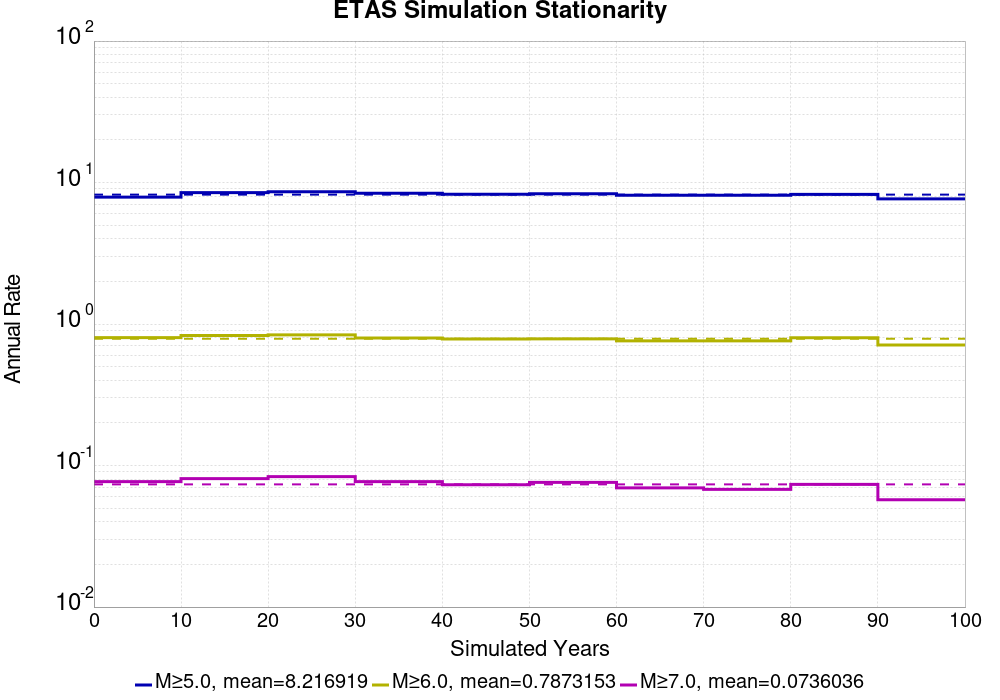
Section Participation
(top)
Section Participation Plots
(top)
| Min Mag | Complete Catalog (including spontaneous) |
|---|
| All Supra. Seis. | 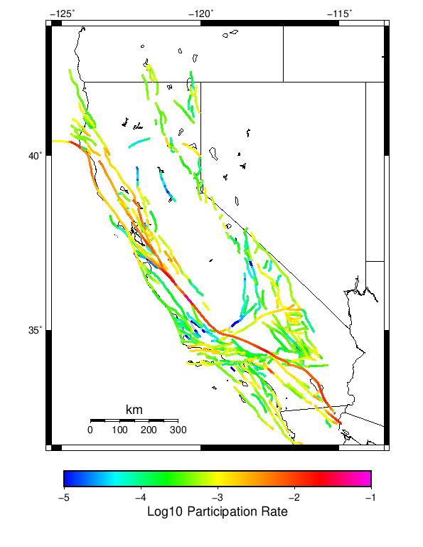 |
| M≥6.5 | 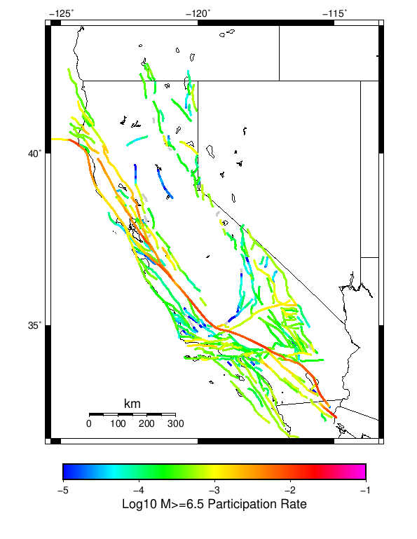 |
| M≥7 | 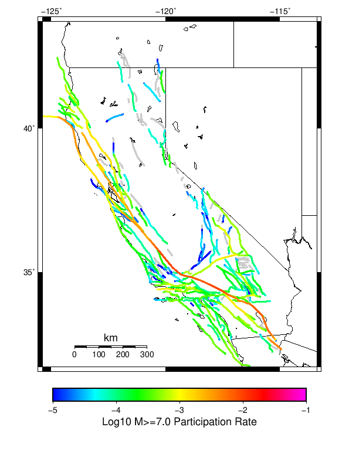 |
| M≥7.5 | 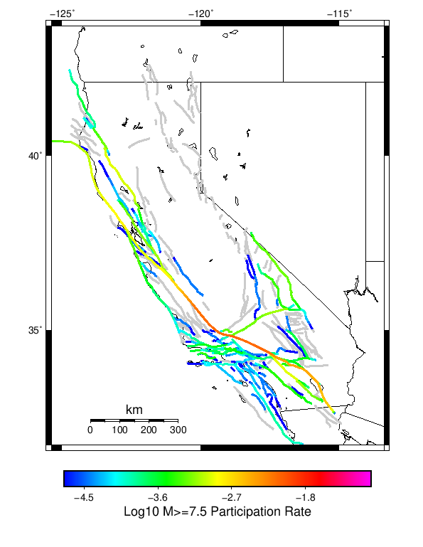 |
| M≥8 | 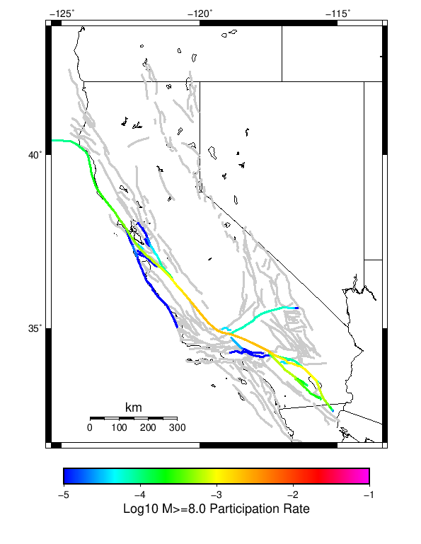 |
Supra-Seismogenic Parent Sections Table
(top)
First 10 of 312 with matching ruptures shown
| Parent Name | Total Mean Annual Rate | Total 100 Year Prob |
|---|
| San Andreas (Parkfield) | 0.047135133 | 1.0 |
| San Andreas (Creeping Section) 2011 CFM | 0.03544144 | 0.990991 |
| San Andreas (Mojave S) | 0.029855857 | 0.94954956 |
| Mendocino | 0.022144144 | 0.93153155 |
| Cerro Prieto | 0.015459459 | 0.8900901 |
| Hayward (So) 2011 CFM | 0.013567568 | 0.7765766 |
| San Andreas (San Bernardino N) | 0.013531531 | 0.8666667 |
| Imperial | 0.01345946 | 0.836036 |
| Brawley (Seismic Zone) alt 1 | 0.012846847 | 0.82522523 |
| Elsinore (Glen Ivy) rev | 0.011171171 | 0.590991 |
M≥6.5 Parent Sections Table
(top)
First 10 of 302 with matching ruptures shown
| Parent Name | Total Mean Annual Rate | Total 100 Year Prob |
|---|
| San Andreas (Mojave S) | 0.01390991 | 0.8846847 |
| San Andreas (Creeping Section) 2011 CFM | 0.01363964 | 0.8054054 |
| Cerro Prieto | 0.013333334 | 0.8810811 |
| San Andreas (San Bernardino N) | 0.012612613 | 0.85405403 |
| Hayward (So) 2011 CFM | 0.011837838 | 0.7477477 |
| Mendocino | 0.011081081 | 0.74594593 |
| San Andreas (Carrizo) rev | 0.00990991 | 0.86126125 |
| San Andreas (Cholame) rev | 0.009837838 | 0.8576577 |
| Imperial | 0.009693693 | 0.7135135 |
| Brawley (Seismic Zone) alt 1 | 0.009585585 | 0.72432435 |
M≥7 Parent Sections Table
(top)
First 10 of 265 with matching ruptures shown
| Parent Name | Total Mean Annual Rate | Total 100 Year Prob |
|---|
| San Andreas (Mojave S) | 0.0102702705 | 0.8054054 |
| San Andreas (Carrizo) rev | 0.009711712 | 0.8558559 |
| San Andreas (Cholame) rev | 0.009405405 | 0.84144145 |
| San Andreas (San Bernardino N) | 0.008828829 | 0.7207207 |
| San Andreas (Mojave N) | 0.008468469 | 0.7675676 |
| San Andreas (Creeping Section) 2011 CFM | 0.008252252 | 0.6234234 |
| San Andreas (Big Bend) | 0.007927928 | 0.74234235 |
| San Andreas (Parkfield) | 0.0072612613 | 0.64324325 |
| San Andreas (Coachella) rev | 0.006972973 | 0.63243246 |
| San Andreas (San Gorgonio Pass-Garnet HIll) | 0.0064684683 | 0.590991 |
M≥7.5 Parent Sections Table
(top)
First 10 of 178 with matching ruptures shown
| Parent Name | Total Mean Annual Rate | Total 100 Year Prob |
|---|
| San Andreas (Mojave N) | 0.0082882885 | 0.7585586 |
| San Andreas (Mojave S) | 0.007801802 | 0.7045045 |
| San Andreas (Big Bend) | 0.007711712 | 0.72612613 |
| San Andreas (Carrizo) rev | 0.0072072074 | 0.6936937 |
| San Andreas (Cholame) rev | 0.006756757 | 0.65585583 |
| San Andreas (San Bernardino N) | 0.0063963966 | 0.58198196 |
| San Andreas (Parkfield) | 0.005045045 | 0.48828828 |
| San Andreas (San Bernardino S) | 0.0044864863 | 0.4234234 |
| San Andreas (Creeping Section) 2011 CFM | 0.004162162 | 0.3981982 |
| San Andreas (San Gorgonio Pass-Garnet HIll) | 0.0038198198 | 0.37477478 |
M≥8 Parent Sections Table
(top)
First 10 of 51 with matching ruptures shown
| Parent Name | Total Mean Annual Rate | Total 100 Year Prob |
|---|
| San Andreas (Mojave N) | 0.0022342342 | 0.22162162 |
| San Andreas (Carrizo) rev | 0.0022162162 | 0.21981981 |
| San Andreas (Big Bend) | 0.002198198 | 0.21801803 |
| San Andreas (Mojave S) | 0.0021801803 | 0.21621622 |
| San Andreas (Cholame) rev | 0.0021441441 | 0.21261261 |
| San Andreas (San Bernardino N) | 0.002126126 | 0.21081081 |
| San Andreas (Parkfield) | 0.0018558558 | 0.18378378 |
| San Andreas (Creeping Section) 2011 CFM | 0.0014594594 | 0.14594595 |
| San Andreas (San Bernardino S) | 0.0012252253 | 0.122522525 |
| San Andreas (Coachella) rev | 0.0012072072 | 0.12072072 |
Gridded Nucleation
(top)
| Min Mag | Complete Catalog (including spontaneous) |
|---|
| M≥5 | 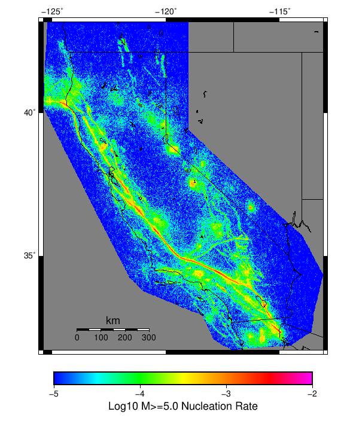 |
| M≥6 | 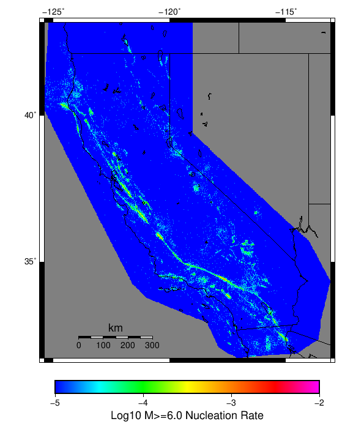 |
| M≥7 | 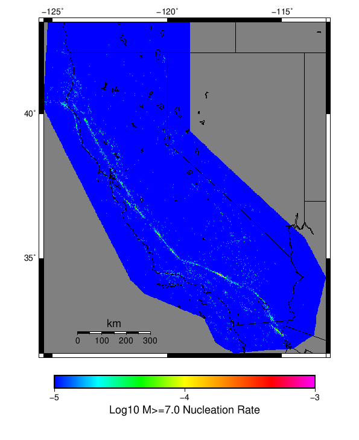 |
(top)
{
"numSimulations": 1000,
"duration": 100.0,
"startYear": 2012,
"includeSpontaneous": true,
"randomSeed": 1567358386003,
"binaryOutput": true,
"binaryOutputFilters": [
{
"prefix": "results_complete",
"descendantsOnly": false
},
{
"prefix": "results_m5_preserve_chain",
"minMag": 5.0,
"preserveChainBelowMag": true,
"descendantsOnly": false
}
],
"forceRecalc": false,
"simulationName": "Start 2012, 100 yr, NoERT, Spontaneous, Historical Catalog",
"numRetries": 3,
"outputDir": "${ETAS_SIM_DIR}/2019_09_01-Start2012_100yr_NoERT_Spontaneous_HistoricalCatalog-includeSpont-histCatalog-no_ert",
"triggerCatalog": "${ETAS_LAUNCHER}/inputs/u3_historical_catalog.txt",
"triggerCatalogSurfaceMappings": "${ETAS_LAUNCHER}/inputs/u3_historical_catalog_finite_fault_mappings.xml",
"treatTriggerCatalogAsSpontaneous": true,
"cacheDir": "${ETAS_LAUNCHER}/inputs/cache_fm3p1_ba",
"fssFile": "${ETAS_LAUNCHER}/inputs/2013_05_10-ucerf3p3-production-10runs_COMPOUND_SOL_FM3_1_SpatSeisU3_MEAN_BRANCH_AVG_SOL.zip",
"probModel": "NO_ERT",
"applySubSeisForSupraNucl": true,
"totRateScaleFactor": 1.0,
"gridSeisCorr": true,
"timeIndependentERF": false,
"griddedOnly": false,
"imposeGR": false,
"includeIndirectTriggering": true,
"gridSeisDiscr": 0.1,
"catalogCompletenessModel": "RELAXED",
"configCommand": "u3etas_config_builder.sh --start-year 2012 --num-simulations 1000 --duration-years 100 --prob-model NO_ERT --include-spontaneous --historical-catalog --scale-factor 1.0 --hpc-site USC_HPC --nodes 36 --hours 24 --queue scec",
"configTime": 1567358386003
}